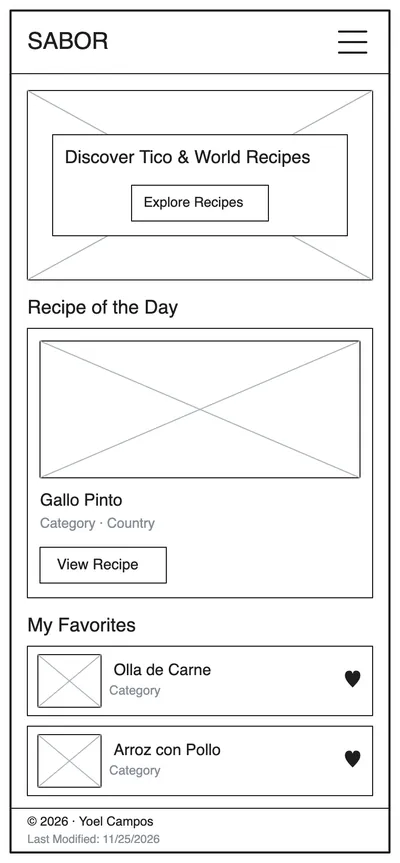
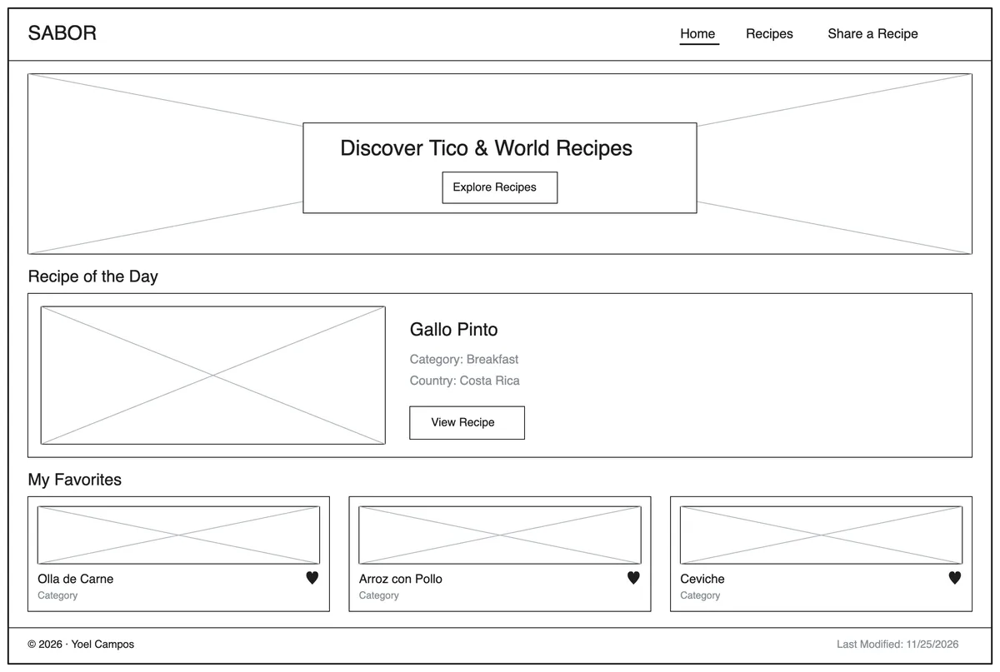

Site Name
Sabor – Tico & World Recipes
- "Sabor" means "flavor" in Spanish. It is short, easy to remember, and ties the site to its Costa Rican roots.
- "Tico & World Recipes" tells visitors right away that the site mixes traditional Costa Rican dishes with international recipes.
Optional domain: saborrecipes.com
Site Purpose
Sabor is a single place to discover new dishes and keep track of favorites. It shows international recipes from TheMealDB, which visitors can filter by category and open for full ingredients and instructions. Traditional Costa Rican dishes such as gallo pinto, casado, and arroz con leche sit alongside them. Visitors can save favorite recipes in their browser and share their own recipes through a form.
Scenarios
- I want to cook something new tonight. What is a good recipe I have never tried?
- I am vegetarian. Where can I find only vegetarian recipes?
- How do I make a traditional Costa Rican gallo pinto?
- I found a recipe I loved last week. How can I find it again quickly?
- I have a family recipe. How can I share it with other people?
Color Scheme
Header and footer background, headings, and borders.
Buttons, links, the favorite icon, and the "recipe of the day" accents.
Active navigation link and highlights on the green background.
Main page background and recipe cards.
Body text.
Every text and background pair passes WCAG AA contrast. For example, white on Forest Green is 9.63:1, Charcoal on Cream is 13.43:1, and Terracotta on Cream is 5.71:1.
Typography
Playfair Display
Gallo Pinto & Casado
Used for the site name, page headings, and recipe titles. It is an elegant serif that feels like a cookbook.
Nunito
Mix the rice and black beans, then add Salsa Lizano to taste.
Used for body text, navigation, ingredient lists, buttons, and forms. It is a rounded sans-serif that stays readable at small sizes.
Wireframe
Home page layout for small (mobile) and large (desktop) viewports.

